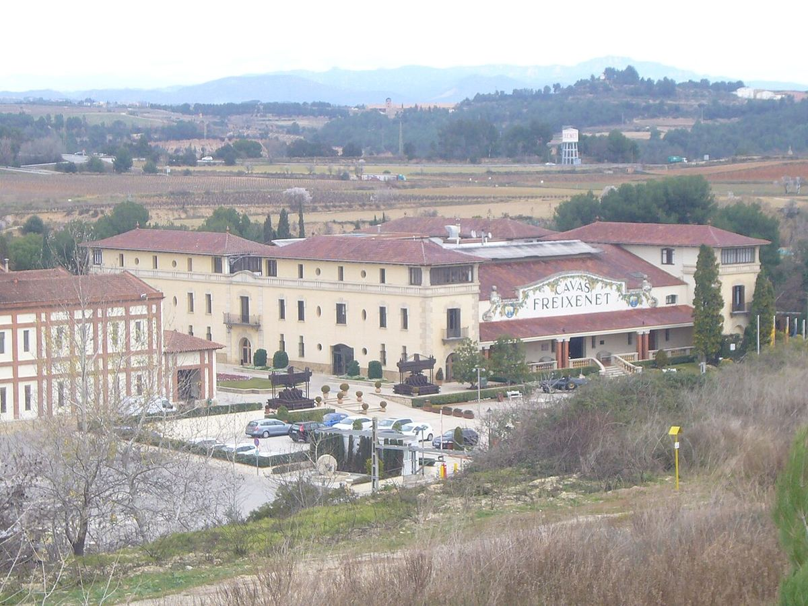

EFFERVESCENT
Grande maison de cava de Sant Sadurní d'Anoia, connue dans le monde entier pour des effervescents largement diffusés comme Cordón Negro et Carta Nevada, aujourd'hui intégrée au groupe Henkell Freixenet.

Freixenet est née à Sant Sadurní d'Anoia au début du XXe siècle de l'union de deux familles liées au vin, les Ferrer et les Sala. Le nom vient de la ferme familiale « La Freixeneda ». Pendant des décennies, l'entreprise a été dirigée par la famille Ferrer, qui en a fait l'un des plus grands producteurs mondiaux de vins effervescents de méthode traditionnelle.
À partir de la seconde moitié du XXe siècle, Freixenet a développé une intense activité d'exportation et porté le cava sur de nombreux marchés internationaux. Ses campagnes publicitaires de Noël sont devenues très populaires en Espagne. Le groupe a également intégré des domaines dans d'autres appellations espagnoles et dans d'autres pays. En 2018, le groupe allemand Henkell a acquis la majorité du capital, donnant naissance à Henkell Freixenet.
La maison travaille les cépages classiques du cava —macabeu, xarel·lo et parellada— et élabore ses effervescents selon la méthode traditionnelle, avec seconde fermentation en bouteille. Ses cuvées les plus connues sont Cordón Negro, dans sa bouteille noire caractéristique, et Carta Nevada, en bouteille givrée. À leurs côtés figurent des cavas à plus long élevage, des rosés et d'autres effervescents.
La maison propose des visites de ses caves à Sant Sadurní d'Anoia, avec parcours des installations et dégustation.